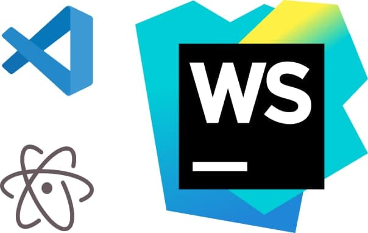

Файлы и текстовые редакторы
Установка текстового редактора
Если у тебя нет установленного текстового редактора, тебе нужно будет установить его. Здесь есть парочка редакторов, которые мы рекомендуем:

Внимание!
Не пытайся писать свой код в текстовый редактор Microsoft Word, Гугл документы , или же в Блокноте.Эти приложения могут добавлять в текст дополнительные скрытые данные. Хотя код может смотреться хорошо, эти дополнительные скрытые данные могут вызвать ошибки, которые мешают работе кода!
Который из этих файлов состоит из текста?
Историю которые вы написали на Atom
HTML документ для домашней страницы IT-Academy
Кусочек записанной музыки
PDF файл контракта
Запустите файл notes.html!
Теперь, когда вы установили текстовый редактор, используйте его для создания файла HTML. Давайте создадим файл с именем notes.html, который вы можете использовать для заметок на протяжении всего курса. Записи в этом файле служат двум целям. Во-первых, по мере прохождения курса вы можете проверить свои знания HTML, написав HTML-код в этом файле и отобразив его в своем браузере. Во-вторых, записывание идей поможет вам лучше их запомнить - а если вы что-то забудете, вы можете просто просмотреть свои записи!
Выберите правильную последовательность действий:
Когда делаешь изменения на документе HTML, чтобы увидеть эти изменения нужно сперва сохранить документ и открыть в браузере
Выберите правильную последовательность действий:
Программы для верстки веб-страниц
Инструменты для верстки веб-страниц схожи с программами предпечатной подготовки, различие в конечном продукте — веб-странице.
Эти инструменты обеспечивают визуальный интерфейс «WYSIWYG» (W hat You See Is W hat You Get — Что видишь, то и получишь) и использование подсказок, которые освобождают от ввода повторяющегося кода HTML и CSS. Однако эти инструменты не освобождают тебя от изучения языка HTML. Даже самые сложные из них не сгенерируют такой чистый и продуманный HTML-код, как при профессиональной верстке вручную, хотя они могут ускорить процесс, если ты уверен в своих знаниях.
Редакторы HTML-кода
Редакторы HTML-кода (в противоположность инструментам для верстки) разработаны, чтобы ускорить процесс написания HTML-кода вручную. Они не позволяют редактировать страницу визуально, поэтому необходимо тестировать ее в браузере. Многие профессиональные веб-дизайнеры на самом деле предпочитают создавать HTML документы вручную.
Интернет инструменты
Так как ты будешь иметь дело с Интернетом, тебе понадобятся некоторые
инструменты, предназначенные для просмотра и перемещения
файлов по сети.
Различные браузеры. Поскольку браузеры отображают страницы по разному, ты захочешь проверить страницы
на максимально возможном
количестве браузеров. Существуют сотни видов браузеров, вот несколько популярных:
Выберите правильную последовательность разработки дизайна сайта:
Далее: Для чего нам нужен HTML?